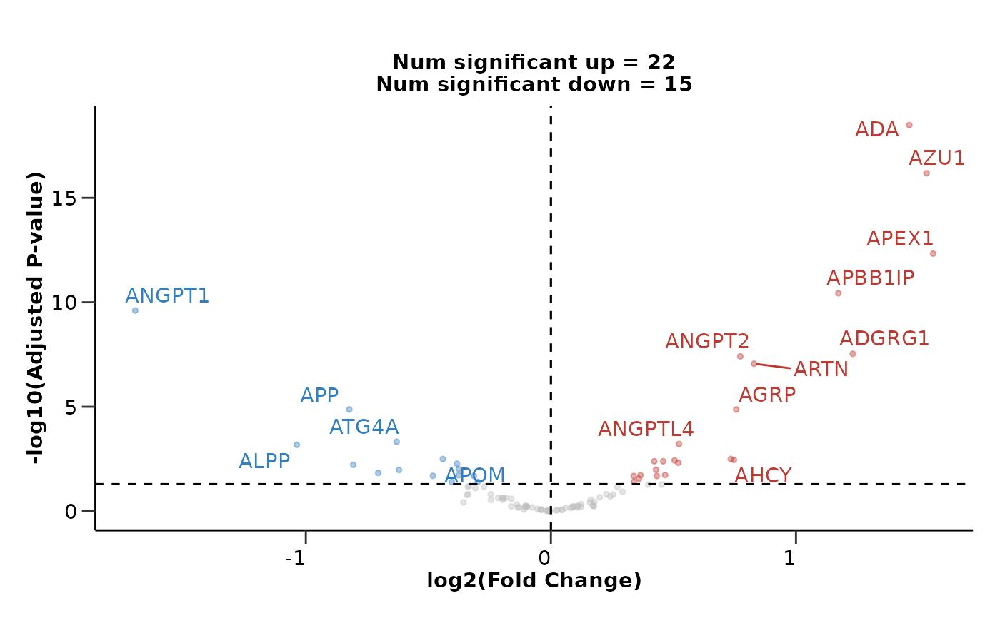

hd_plot_volcano() creates volcano plots for the differential expression results.
It colors and labels the top-n up and down regulated proteins.
Usage
hd_plot_volcano(
de_object,
pval_lim = 0.05,
logfc_lim = 0,
top_up_prot = 10,
top_down_prot = 5,
palette = "diff_exp",
title = NULL,
report_nproteins = TRUE,
user_defined_proteins = NULL
)Arguments
- de_object
The differential expression object. Created by
hd_de_limma()orhd_de_ttest().- pval_lim
The p-value limit for significance. Default is 0.05.
- logfc_lim
The logFC limit for significance. Default is 0.
- top_up_prot
The number of top up regulated proteins to label on the plot. Default is 10.
- top_down_prot
The number of top down regulated proteins to label on the plot. Default is 5.
- palette
The color palette for the plot. If it is a character, it should be one of the palettes from
hd_palettes(). Default is "diff_exp".- title
The title of the plot or NULL for no title.
- report_nproteins
If the number of significant proteins should be reported in the title. Default is TRUE.
- user_defined_proteins
A vector with the protein names to label on the plot if customization is required. Default is NULL.
Examples
# Initialize an HDAnalyzeR object
hd_object <- hd_initialize(example_data, example_metadata)
# Run differential expression analysis for AML vs all others
de_results <- hd_de_limma(hd_object, case = "AML")
# Create a volcano plot
hd_plot_volcano(de_results)
#> $de_res
#> # A tibble: 100 × 10
#> Feature logFC CI.L CI.R AveExpr t P.Value adj.P.Val B Disease
#> <chr> <dbl> <dbl> <dbl> <dbl> <dbl> <dbl> <dbl> <dbl> <chr>
#> 1 ADA 1.46 1.17 1.75 0.924 9.83 3.29e-21 3.29e-19 37.3 AML
#> 2 AZU1 1.53 1.20 1.86 0.226 9.10 1.32e-18 6.62e-17 31.4 AML
#> 3 APEX1 1.56 1.17 1.95 0.517 7.90 1.40e-14 4.67e-13 22.3 AML
#> 4 APBB1IP 1.17 0.855 1.49 -0.237 7.24 1.48e-12 3.69e-11 17.8 AML
#> 5 ANGPT1 -1.70 -2.18 -1.21 1.72 -6.92 1.24e-11 2.48e-10 15.6 AML
#> 6 ADGRG1 1.23 0.837 1.63 1.54 6.12 1.75e- 9 2.92e- 8 10.8 AML
#> 7 ANGPT2 0.773 0.522 1.02 0.920 6.04 2.70e- 9 3.86e- 8 10.3 AML
#> 8 ARTN 0.829 0.552 1.11 0.429 5.88 6.95e- 9 8.69e- 8 9.47 AML
#> 9 APP -0.823 -1.15 -0.493 1.17 -4.90 1.24e- 6 1.35e- 5 4.42 AML
#> 10 AGRP 0.756 0.452 1.06 0.0229 4.88 1.35e- 6 1.35e- 5 4.35 AML
#> # ℹ 90 more rows
#>
#> $volcano_plot

#>
#> attr(,"class")
#> [1] "hd_de"